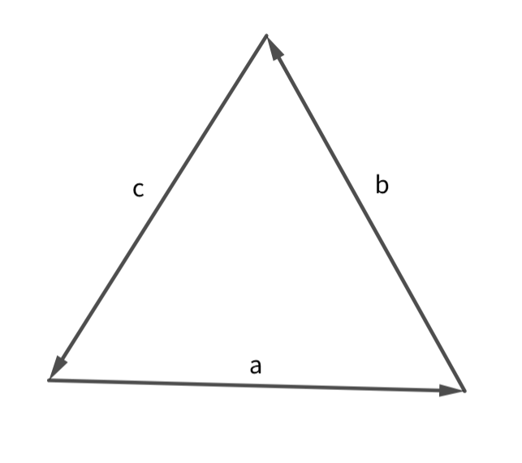
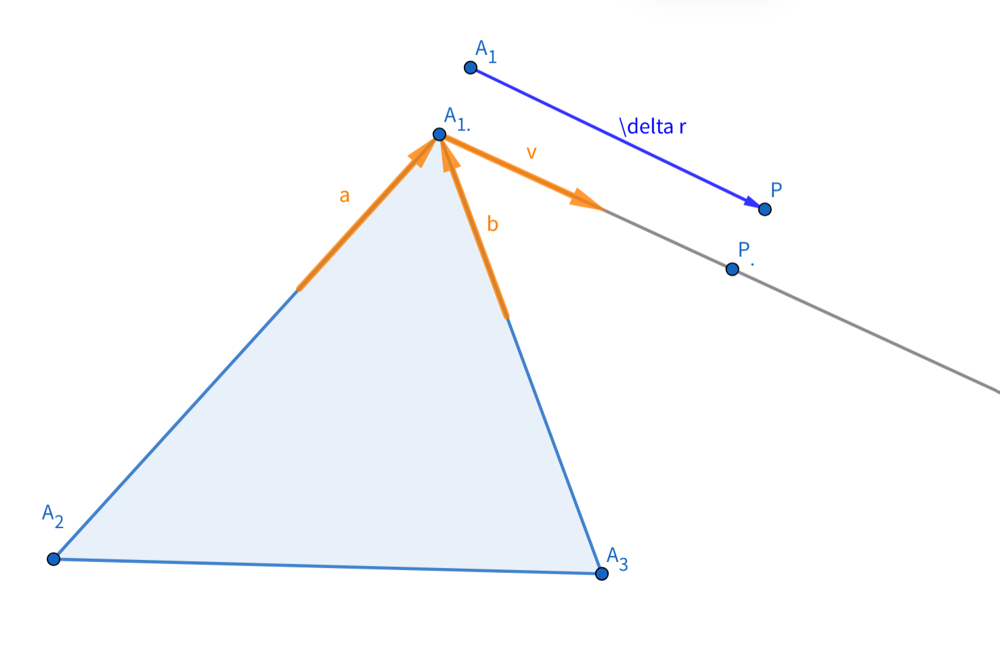
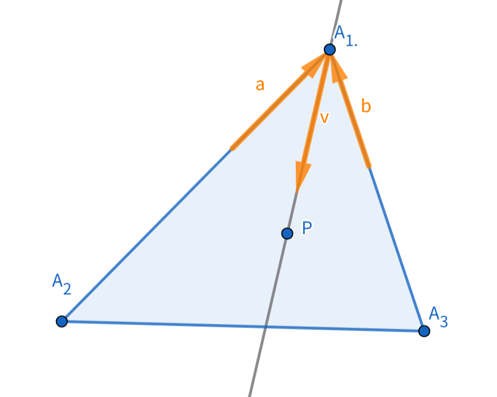
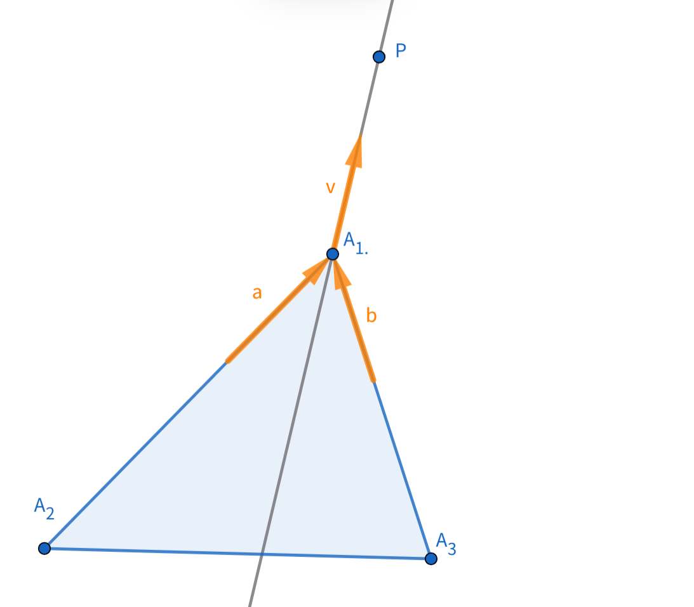

1
f(x,y)= \sum_{k=1}^{k=3} \sqrt{ (x-x_k)^2+(y-y_k)^2 }P(x,y)不与(x_k,y_k)重合.
\nabla =(f'_x ,f'_y) = \left( \sum_{k=1}^{k=3} \frac{ x-x_k }{\sqrt{ (x-x_k)^2+(y-y_k)^2 }},\sum_{k=1}^{k=3} \frac{ y-y_k }{\sqrt{ (x-x_k)^2+(y-y_k)^2 }} \right)\nabla=\sum_{k=1}^{k=3} \frac{ \overrightarrow{A_kP} }{\left| A_kP \right|}设
f(x) =
\begin{cases}
& \hat{a}=\frac{ \overrightarrow{A_kP} }{\left| A_k P\right|} (k=1) \\
& \hat{b}=\frac{ \overrightarrow{A_kP} }{\left| A_kP \right|} (k=2) \\
& \hat{c}=\frac{ \overrightarrow{A_kP} }{\left| A_kP \right|} (k=3)
\end{cases}\nabla=\hat{a}+\hat{b}+\hat{c}2
\Delta f=\nabla \cdot \Delta \vec{r}=f'_x \Delta x+f'_y \Delta y
函数在某点Q取最值，必要条件是该点\nabla =\vec{0}
令\nabla=\hat{a}+\hat{b}+\hat{c}=\vec{0}

三个单位向量之和为零向量，显然任意两单位向量夹角为\frac{2\pi}{3}
即该 Q 满足这样的条件:\angle A_1QA_2=\angle A_2QA_3=\angle A_3QA_1=\frac{2\pi}{3}.
而且很容易知道,当三角形所有内角均小于\frac{2\pi}{3}时,Q点存在于三角形内部;当三角形有一内角大于等于\frac{2\pi}{3} 时,P点不存在.(有一内角大于\frac{2\pi}{3}的情况尤其明;当有一内角A等于\frac{2\pi}{3}时,似乎P在A点时条件成立,但函数定义域不包含A点,这在最后再进行分析.)
2.1 先分析Q点存在的情况,三角形所有内角均小于\frac{2\pi}{3}
先由\angle A_1QA_2=\angle A_2QA_3=\angle A_3QA_1=\frac{2\pi}{3}求出Q,
接着证明Q点是极小值点.
需要用到二元函数泰勒展开式
\Delta f=f(x_Q+\Delta x,y_Q+\Delta y)-f(x_Q,y_Q)\Delta f=\left( f'_x \Delta x+f'_y \Delta y \right)+\frac{1}{2!} \left( f''_{x^2} {\Delta x}^2+2f''_{xy} \Delta x \Delta y+f''_{^2} {\Delta y}^2 \right)+ o \left( {\Delta x}^2+{\Delta y}^2 \right)在Q点附近时,忽略最后一项并带入导数的值.
\Delta f=\frac{1}{2!} \left( \frac{ (y_Q-y_k)^2}{\left((x_Q-x_k)^2+(y_Q-y_k)^2\right)^{\frac{3}{2}}} {\Delta x}^2-2\frac{ (x_Q-x_k)(y_Q-y_k)}{\left((x_Q-x_k)^2+(y_Q-y_k)^2\right)^{\frac{3}{2}}} \Delta x \Delta y+\frac{ (x_Q-x_k)^2}{\left((x_Q-x_k)^2+(y_Q-y_k)^2\right)^{\frac{3}{2}}}{\Delta y}^2 \right)\Delta f=\frac{1}{2!} \frac{\left( (y_Q-y_k)\Delta x - (x_Q-x_k) \Delta y \right)^2 }{\left((x_Q-x_k)^2+(y_Q-y_k)^2\right)^{\frac{3}{2}}}\Delta f=f(x_Q+\Delta x,y_Q+\Delta y)-f(x_Q,y_Q)恒大于等于0,说明Q点周围的点对应函数值均大于等于f(Q),即Q点为极小值点.
但这还不能说明Q点取函数最小值,还需要考虑定义域的边界位置(三个顶点).
以A_1点为例,
在该顶点处,f(A_1)函数值显然存在,但f'_x|_{A_1}和f'_y|_{A_1}不存在,因为
\lim_{(x,y)\rightarrow (x_1,y_1)}\frac{ x-x_1 }{\sqrt{ (x-x_1)^2+(y-y_1)^2 }}, \lim_{(x,y)\rightarrow (x_1,y_1)}\frac{ y-y_1 }{\sqrt{ (x-x_1)^2+(y-y_1)^2 }}不存在.
为了确定这点附近的函数值变化情况,需要为点P确定一个运动方向. 使P点从A_1点开始沿一射线运动,运动方向用\hat{v}表示.
这样,
\lim_{(x,y)\rightarrow (x_1,y_1)} \left( \frac{ x-x_1 }{\sqrt{ (x-x_1)^2+(y-y_1)^2 }}, \frac{ y-y_1 }{\sqrt{ (x-x_1)^2+(y-y_1)^2 }} \right)=
\hat{v}\lim_{(x,y)\rightarrow (x_1,y_1)}\nabla=
\hat{a}+\hat{b}+\vec{v}
下面证明当三角形内角小于\frac{2\pi}{3}时,顶点不是极值点.
取P点运动的方向\hat{v}与\angle A_1的角平分线平行. 在A_1点附近,如图.


当P 在三角形内部,
\Delta f=f(P)-f(A_1)=\nabla \cdot \Delta \vec{r}=\left( \hat{a}+\hat{b}+\hat{v} \right) \cdot \left| \vec{r} \right| \hat{v}= \left| \vec{r} \right| \left( \left( \hat{a}+\hat{b} \right) \cdot \hat{v} +1 \right) = \left| \vec{r} \right| \left(- \left| \hat{a}+\hat{b} \right| \cdot \left| \hat{v} \right| +1 \right).
由夹角小于\frac{2\pi}{3},得 \left| \hat{a}+\hat{b} \right|>1,\Delta f=f(P)-f(A_1)<0.
当P 在三角形外部,
\Delta f=f(P)-f(A_1)=\nabla \cdot \Delta \vec{r}=\left( \hat{a}+\hat{b}+\hat{v} \right) \cdot \left| \vec{r} \right| \hat{v}= \left| \vec{r} \right| \left( \left( \hat{a}+\hat{b} \right) \cdot \hat{v} +1 \right) = \left| \vec{r} \right| \left( \left| \hat{a}+\hat{b} \right| \cdot \left| \hat{v} \right| +1 \right).
\Delta f=f(P)-f(A_1)>0.
P点从A_1开始在附近沿角平分线直线运动,向内部运动时函数值小于f(A_1),向外部运动时函数值大于f(A_1),显然A_1点不会是极值点.
同样地,所有顶点都不会是极值点.
综合分析定义域内部极值点和定义域边界,Q点就是要求的最小值点.
2.2 分析Q点不存在的情况,三角形有一内角大于等于\frac{2\pi}{3}
- Q点不存在\rightarrow在定义域内部不存在极值点.
- 由2.1得\rightarrow在内角小于\frac{2\pi}{3}的顶点处不是极值点.
只需考虑内角大于等于\frac{2\pi}{3}的那一顶点.
设该顶点为A_1,仍限制P从A_1出发沿某一射线在附近运动.下面任取运动方向\hat{v},
\Delta f=f(P)-f(A_1)=\nabla \cdot \Delta \vec{r}=\left( \hat{a}+\hat{b}+\hat{v} \right) \cdot \left| \vec{r} \right| \hat{v}= \left| \vec{r} \right| \left( \left( \hat{a}+\hat{b} \right) \cdot \hat{v} +1 \right)= \left| \vec{r} \right| \left( \left| \hat{a}+\hat{b} \right| \cos{\theta} +1 \right)\theta为\hat{a}+\hat{b}与\hat{v}夹角.由\hat{a}与\hat{b}夹角大于等于\frac{2\pi}{3},
\Delta f=f(P)-f(A_1) = \left| \vec{r} \right| \left( \left| \hat{a}+\hat{b} \right| \cos{\theta} +1 \right) \ge \left| \vec{r} \right| \left(1 \cdot \left(- 1\right)+1 \right) =0
在A_1 点周围,函数值f(P)均不小于 f(P),故A_1是极小值点.
综合分析,在三角形大于等于\frac{2\pi}{3}的内角处f取最小值.